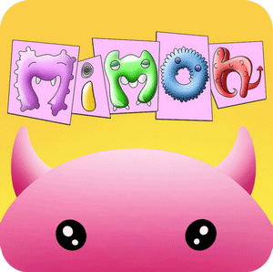

می مون بچه هیولای کوچکی است که در دنیای انسانها گم شده. او خسته و تنها، از خانهای به خانه دیگر به دنبال غذا آواره شده است.
اما این تمام مشکلات می مون کوچک نیست. او انرژی کمی دارد و با دنیای انسانها هم آشنا نیست. اشیاء و موجوداتی که میبیند برایش بسیار عجیبند، و می مون علاقه دارد به آنها نزدیک شود. ولی متأسفانه با برخورد به این اشیا، می مون عزیز انرژی خود را از دست می دهد.
اما این تمام مشکلات می مون کوچک نیست. او انرژی کمی دارد و با دنیای انسانها هم آشنا نیست. اشیاء و موجوداتی که میبیند برایش بسیار عجیبند، و می مون علاقه دارد به آنها نزدیک شود. ولی متأسفانه با برخورد به این اشیا، می مون عزیز انرژی خود را از دست می دهد.
برای کمک به می مون، یک بازی آندروید نوشته شد تا در حد توان کمکی به این بچه کرده باشیم.
وظیفه شما در این بازی هدایت این موجود برای جلوگیری از برخورد با موانع است.هم چنین باید اورا کمک کنید تا غذاهای بیشتری پیدا کند و بخورد. در این بازی بیش از 20 نوع مانع و بیش از 30 نوع غذا وجود دارد. در صورت برخورد با هریک از موانع، به مقدار مشخصی از انرژی می مون کم میشود. و با خوردن هر تکه غذا انرژیاش زیاد میشود. برای پریدن باید سمت راست صفحه را لمس کنید.در صورتی که دستتان را در این ناحیه نگه دارید، می مون در هوا می ماند.به همین ترتیب با لمس سمت چپ صفحه می مون قل میخورد. در بازی سه نوع قدرت داریم.یکی برای دوبرابر کردن امتیاز دریافتی است.یکی در مدت محدودی فقط غذا سرراهتان میگذارد و مانعی در کار نیست. و دیگری می مون را نامرئی میکند تا در برخورد با موانع آسیبی نبیند.
وظیفه شما در این بازی هدایت این موجود برای جلوگیری از برخورد با موانع است.هم چنین باید اورا کمک کنید تا غذاهای بیشتری پیدا کند و بخورد. در این بازی بیش از 20 نوع مانع و بیش از 30 نوع غذا وجود دارد. در صورت برخورد با هریک از موانع، به مقدار مشخصی از انرژی می مون کم میشود. و با خوردن هر تکه غذا انرژیاش زیاد میشود. برای پریدن باید سمت راست صفحه را لمس کنید.در صورتی که دستتان را در این ناحیه نگه دارید، می مون در هوا می ماند.به همین ترتیب با لمس سمت چپ صفحه می مون قل میخورد. در بازی سه نوع قدرت داریم.یکی برای دوبرابر کردن امتیاز دریافتی است.یکی در مدت محدودی فقط غذا سرراهتان میگذارد و مانعی در کار نیست. و دیگری می مون را نامرئی میکند تا در برخورد با موانع آسیبی نبیند.